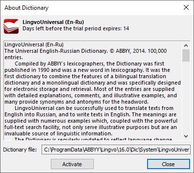
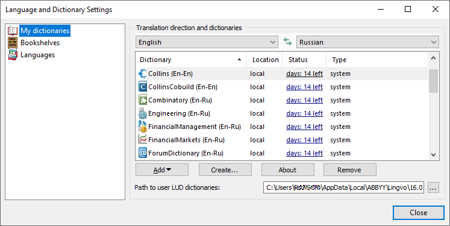
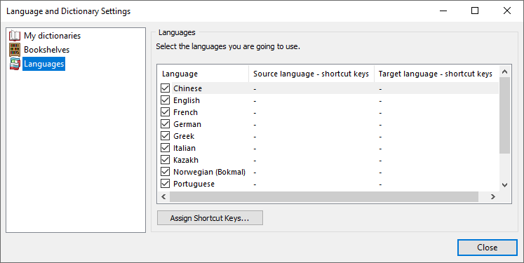
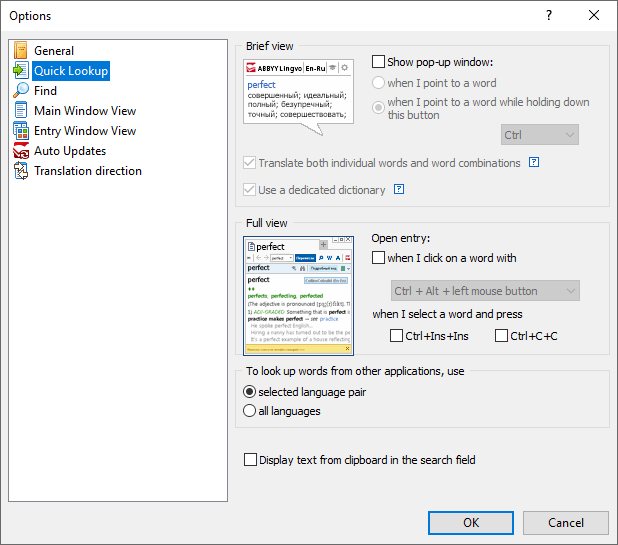
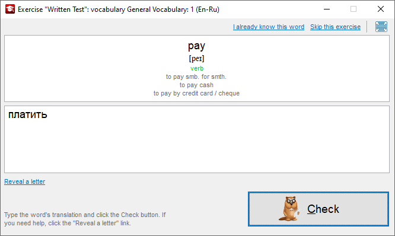
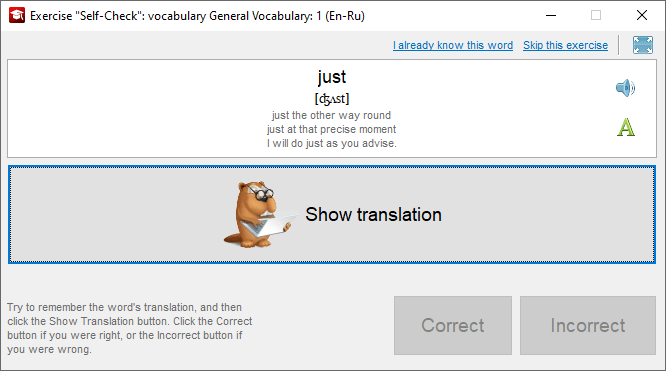

Lingvo x6 (16.0)
Хроника
Год выпуска: 2014.
Прекращена неофициальная поддержка языков: азербайджанский, киргизский, таджикский, туркменский, узбекский.
Интерфейс доступен на 4 языках: английском, русском, украинском и казахском. По сравнению с предшествующей x5 удалён испанский язык (традиционной сортировки).
Внешний вид
Основное окно программы, список заголовков:

Словарная карточка:

Окошко аннотации словаря:

Вкладки окна управления словарями:



Вкладки окна настроек программы:




Окошко «О программе»:

Окно компилятора пользовательских словарей:

Окна приложения Tutor:



Состав словарей
| Наименование | Автор, издание | Объём |
|---|---|---|
| ... в разработке ... | ... в разработке ... | ... в разработке ... |